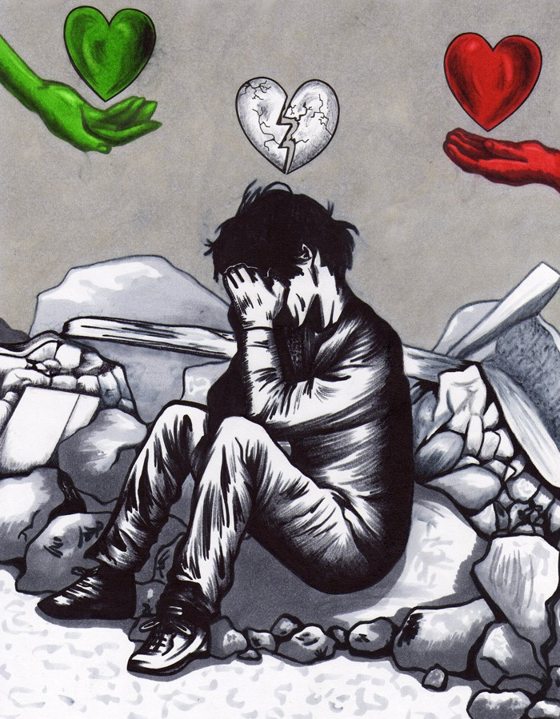

Lands movements in Italy 2021 - 2022 
Leaflet
Raising awareness
The Result
CUNY Graduate Center Javascript Class: Final Project - Gemma S.
In the light of the recent events in Ischia (Italy), it is increasingly important to understand the phenomenom of earthquakes. There are several sources that provide a more or less comprehensive definition of earthquake; one of the most detailed is provided by the U.S. Geological Survey
(USGS)
, the sole science agency for the Department of the Interior, in their official website which is reported here:"An earthquake is what happens when two blocks of the earth suddenly slip past one another. The surface where they slip is called the fault or fault plane. The location below the earth’s surface where the earthquake starts is called the hypocenter, and the location directly above it on the surface of the earth is called the epicenter." The location below the earth’s surface where the earthquake starts is called the hypocenter, and the location directly above it on the surface of the earth is called the epicenter.
Hover on or drag the circles
In simple terms, earthquakes are caused by those movements generated by the Earth's tectonic plates. When these plates move towards each other, as a result, one can be pushed down and slip inside the mantle. Although the Earth looks like a pretty solid place from the surface, it’s actually extremely active just below the surface. It's four basic layers are: a solid crust, a hot, nearly solid mantle, a liquid outer core and a solid inner core.
This simple bubble chart shows the number of earthquakes recorded in Italy in the last 12 months (November 2021-November 2022) group by magnitude.
Hover on this icon
to switch to OMS map view
Click on the circles to zoom into the area of interest
Effects
Magnitude on the Richter Scale
Serious damage and destruction
Over 7
Moderate damage in dense areas, potential damage to people and objects
Between 6 & 6.9
Damage to weak structures, potential damage to people
Between 5 & 5.9
Felt by virtually everyone, minor damage to things
Between 4 & 4.9
Generally no damage caused, felt by many people
Between 3 & 3.9
On average, not perceived by people, though recorded on local tools
Between 1 & 2.9
Sources and Credits
Data and Literature sources:
http://terremoti.ingv.it/
https://www.britannica.com/science/Richter-scale
https://www.bbc.com/news/world-europe-63767660
https://www.usgs.gov/programs/earthquake-hazards/science-earthquakes
Powered by:Gemma S.